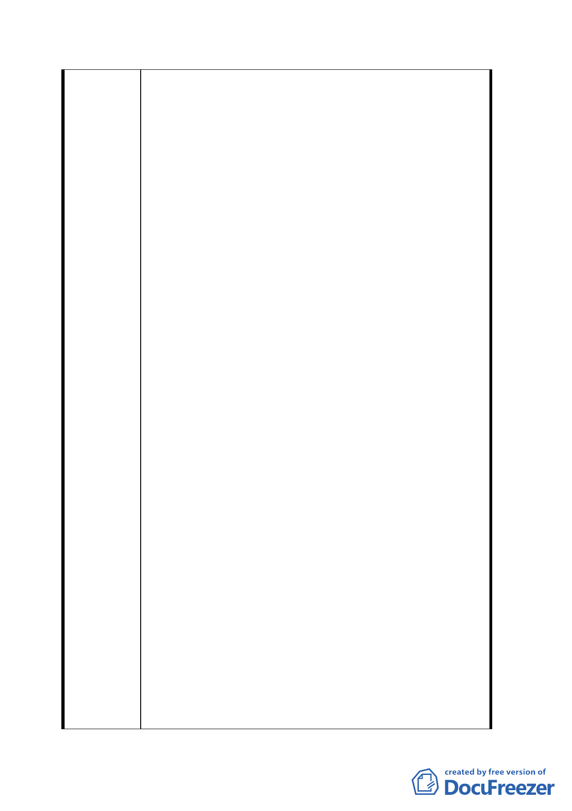

改觀和帶動此地區更加繁榮，也免中華路漂亮大道
上有缺口，更欠整齊美觀。
四、次就現住戶係五十九年三月二十七日以前善意
和平使用者，況且已經標售三次無人問津、衡情、
度理、依法再降至適當價格標售，並無不妥現住戶
人數眾多，家境清苦，能得到從優的安置補償，另
謀安居這裡曾發生大小火災數十多，人口逾二千以
上，安全堪慮，政府應有體諒照顧人民之義務。
五、違章建築戶願意配合政府標售遷離，經本人商
得蔡家財團同意投資，並且還發違建戶半數以上訂
金在案，故囑本人向各位委員表達說明，如果價格
適宜，資金不是問題，所有一切均可迎刃而解。
六、以上均係實情，卻能解決 13 筆土地標購及處理
違建戶之主因，敬請 諸位委員明察接納為感。
九十三年八月三十一日補充
一、有關座落於台北市萬華區即中華路一段一七四
號，即漢中段二小段 5、5-1、8、8-1、8-2、132、
133、134、135、136、137、137-1、137-2 等十三
筆國有商四土地，業由國有財產局簽奉財政部核定
依現狀標售。
二、台北市政府近來擬將上開土地變更為廣場用
地，而市府當前百端待舉之際，請求慎重其事，本
案土地面臨中華路最美觀大道、連接西門町，且住
戶並不單純，處理困難重重，絕非一朝一夕可成，
也不符盡其利之旨意；請市府為市民請命，協調財
政部和國有財產局調降低價標售（93 年公告現值參
考每一平方公尺 150023 元，每一坪 495000 元），又
由於現狀標售，得標廠商得自己處理地上物房屋之
問題，請求降價標售理由所在也讓住戶另謀安居之
地，更是政府照顧他們之德意，在內部市府須動用
財力、人力即可達到更新之效，而且標售後土地稅
房屋稅遠比現在分文收入都沒有，況且市容受到影
響，看似不必墨守成規；建築完成且有引導西門鬧
區活動功能，開放空間系統、地下層設停車場更具
交通之流暢性，將來變成景觀美麗，定為政府及民
間所共同樂見。
三、財政部方面既然核准現狀標售，然而由國有財
產局台灣北區辦事處標售數次均乏人問津，其住要
一九